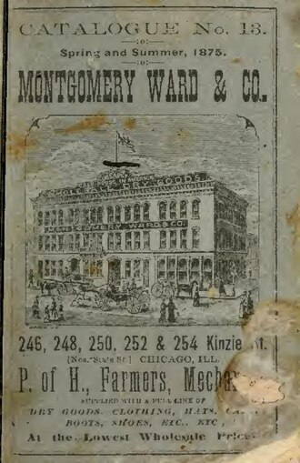

오늘 우리는 하루에도 수십 번씩 “나에게만 온 것처럼 보이는” 메시지를 받는다. 이메일, 문자, 앱 알림, 멤버십 혜택, 쿠폰. 브랜드는 내가 열어 봤는지, 눌렀는지, 샀는지까지 기록한다.
이 방식은 어느 날 갑자기 나타난 것이 아니다. 개인에게 직접 말을 걸고 그 반응을 측정하는 마케팅에 이름을 붙이고 체계를 세운 사람이 있다. 광고인 레스터 운더맨(Lester Wunderman, 1920–2019)이다. 그는 흔히 ‘다이렉트 마케팅의 창시자’로 불린다.
그런데 “창시자”라는 말은 조심해서 써야 한다. 우편 카탈로그도, 쿠폰도, 반응을 측정하려는 시도도 그가 태어나기 훨씬 전부터 있었기 때문이다. 그렇다면 운더맨은 정확히 무엇을 처음 했을까? 이 글은 그 질문에서 출발한다.
이 글에서 확인할 마케팅 개념
다이렉트 마케팅반응 장치(response device)반응률A/B 테스트CRM로열티 프로그램관계 마케팅개인정보 보호01직접 파는 일은 이미 있었다
기업이 소비자에게 직접 다가가는 방식은 오래되었다. 15세기 베네치아의 출판업자 알두스 마누티우스는 자기가 파는 책의 목록을 인쇄했고, 1744년에는 벤저민 프랭클린이 학술 서적 카탈로그를 만들었다. 영국의 조시아 웨지우드도 카탈로그와 우편 견본으로 고객에게 다가갔다. 앞선 글에서 다룬 그 인물이다.
우편 주문이 산업이 된 것은 19세기다. 영국의 프라이스 존스(Pryce Pryce-Jones)는 1861년 웨일스에서 카탈로그를 뿌려 우편으로 주문받는 사업을 시작했는데, 첫 근대적 우편 주문 사업으로 꼽힌다. 미국에서는 아론 몽고메리 워드(Aaron Montgomery Ward)가 1872년 시카고에서 우편 주문 사업을 시작해 시골 고객에게 도매가에 가까운 값으로 물건을 팔았다.

다만 이 시대의 우편 광고는 누가 어떻게 반응했는지를 체계적으로 쌓아 두고 활용하는 구조와는 거리가 멀었다. 주문서가 오면 팔고, 오지 않으면 모른다. 그 사이의 정보가 비어 있었다.
02쿠폰도, ‘반응 측정’도 이미 있었다
흔히 이런 설명을 본다. “운더맨이 쿠폰을 만들어 처음으로 광고 효과를 숫자로 측정했다.” 하지만 이것은 사실과 다르다.
쿠폰은 19세기 말 코카콜라가 무료 음료 카드를 돌린 것이 처음으로 여겨진다. 또 광고인 클로드 홉킨스(Claude C. Hopkins, 1866–1932)는 우편 광고에 쿠폰을 넣고 문구를 바꿔 가며 반응을 비교하는 테스트 캠페인으로 광고비를 성과에 연결한 인물로 알려져 있다. 그의 책 『Scientific Advertising』(1923)은 지금도 읽힌다.
그러면 운더맨은 무엇이 달랐을까? 그의 공헌은 쿠폰을 처음 썼다는 데 있지 않다. 흩어져 있던 방법들을 하나의 이름과 하나의 방식으로 묶었고, 그것을 대기업의 마케팅 전략 한가운데에 올려놓았다는 데 있다.
03호텔방에서 시작한 에이전시
운더맨은 1920년 뉴욕 브롱크스에서 오스트리아와 루마니아 이민자 부부의 아들로 태어났다. 정식 대학 학위는 없었다. 1947년 우편 주문 광고를 주로 하던 맥스웰 색하임 사에 카피라이터로 들어가, 우편 주문 광고가 단순한 판매 수단을 넘어 고객과 더 개인적인 관계를 만드는 방법이 될 수 있다고 보았다.
1958년 8월 20일 그는 형 어빙, 동료 에드 리코타, 해리 클라인과 뉴욕의 하루 30달러짜리 호텔방에서 만나 Wunderman, Ricotta & Kline(WR&K)을 세웠다. 자본은 합쳐서 6만 달러, 직원은 일곱 명, 고객은 아직 없었다. 그런데도 첫해에 200만 달러 넘는 취급액을 올렸다고 한다.
- 1920뉴욕 브롱크스 출생
- 1947맥스웰 색하임 사에서 카피라이터로 출발
- 1958WR&K 설립 (후에 Young & Rubicam에 인수되고 ‘Wunderman’으로 불림)
- 1967‘Direct Marketing’이라는 용어를 정의 (MIT 강연)
- 1983직접 마케팅 명예의 전당
- 1998광고 명예의 전당
- 2019별세, 향년 98세
04이름을 붙이다: Direct Marketing
1967년 운더맨은 이 접근 방식에 ‘다이렉트 마케팅(direct marketing)’이라는 이름을 붙이고 정의했다. 위키백과는 이를 MIT 강연으로 소개한다. 이름이 생기면 하나의 분야가 된다. 흩어져 있던 우편 판매, 쿠폰, 카탈로그, 전화 주문이 “같은 원리의 다른 모습”으로 묶인 것이다.
오늘날의 정의를 요약하면 이렇다.
핵심은 두 가지다. 메시지가 특정한 사람에게 간다는 점, 그리고 반응할 수단이 함께 붙어 있다는 점이다. 반응 수단이 있으면 반응을 기록할 수 있고, 기록하면 다음 메시지를 고칠 수 있다. 보내고, 측정하고, 고치는 이 순환이 운더맨 방식의 뼈대다.
05광고에 ‘반응 장치’를 붙이다
운더맨과 그의 회사가 개발하거나 널리 퍼뜨린 것으로 알려진 장치들은 모두 소비자가 손쉽게 반응할 수 있게 하고, 그 반응이 기록되게 하는 것들이다.
| 반응 장치 | 어떻게 작동했나 | 오늘의 후손 |
|---|---|---|
| 잡지 구독 카드 | 잡지에 끼워 넣은 엽서를 뜯어 보내면 구독 신청 | 회원가입 버튼, 랜딩페이지 폼 |
| 수신자 부담 전화번호 (1-800) | 도요타 캠페인을 위해 개발된 것으로 전해지며, 전화 한 통으로 주문과 문의 | 고객센터, 챗봇, 앱 내 문의 |
| Columbia Record Club | 우편으로 회원을 모집하고 음반을 정기 발송하는 회원제 음반 클럽(WR&K가 개발·홍보에 관여) | 구독 서비스, 정기 배송 |
| 쿠폰/반응 우편 | 우편을 받은 사람 중 누가 쿠폰을 썼는지 기록 | 쿠폰 코드, 추적 링크, 이메일 열람/클릭 |
전화번호 이야기는 정확히 해 둘 필요가 있다. 미국에서 수신자 부담 전화 서비스 자체는 1967년 5월 벨 시스템이 도입했다. 운더맨의 공은 이 서비스를 광고의 반응 수단으로 가져온 것이다. 번호를 발명했다는 표현은 정확하지 않다.
06측정이 데이터가 되고, 데이터가 관계가 되다
반응을 기록하면 이런 질문에 답할 수 있다.
- 어떤 메시지가 더 높은 반응률을 냈나?
- 어떤 고객이 더 오래, 더 자주 사나?
- 어떤 지역에서 반응이 좋은가?
이 질문들은 오늘의 CTR전환율A/B 테스트CRM과 그대로 이어진다. 다만 “운더맨이 이 지표들을 처음 만들었다”가 아니라 “이 지표들이 기대는 사고방식이 이 시기에 체계가 잡혔다”로 읽는 것이 정확하다.
그리고 한 걸음 더 나아가면 관계가 나온다. 고객의 반응을 기록해 두면 그 사람에게 맞는 다음 제안을 할 수 있다. 위키백과는 운더맨이 오랫동안 함께한 아메리칸 익스프레스(AMEX)와의 작업이 첫 고객 보상 프로그램으로 이어졌다고 쓴다. 쓸수록 더 큰 혜택을 주어 고객을 브랜드에 묶어 두는 방식이다.
짚고 넘어갈 점
AMEX의 보상 프로그램을 “세계 최초의 현대적 마일리지 프로그램”이라고 쓰는 글이 많은데, 이는 정확하지 않다. 항공사 마일리지는 1981년 아메리칸 항공의 AAdvantage 등 이미 시작되어 있었다. 위키백과의 표현은 “고객 보상 프로그램이 AMEX와의 관계에서 나왔다”는 정도다. 카드 업계에 들어온 보상 프로그램이라는 점은 의미가 크지만, ‘세계 최초’라는 수식어는 근거가 약하다.이처럼 다이렉트 마케팅은 한 번 팔고 끝나는 거래에서 고객과의 지속적인 관계로 시선을 옮겼다. 오늘의 관계 마케팅로열티 프로그램이 여기서 이어진다.
영상: Lester Wunderman, Creator of Modern-Day Direct Marketing (1/3), Smithsonian National Postal Museum. 운더맨이 직접 자신의 생각을 설명한다.
07그래서 그는 ‘창시자’일까?
| 이전에 있었던 것 | 운더맨이 더한 것 |
|---|---|
| 카탈로그와 우편 주문 (웨지우드, 워드) | 이를 하나의 분야로 정의하고 ‘다이렉트 마케팅’이라는 이름을 붙임 |
| 쿠폰과 반응 테스트 (코카콜라, 홉킨스) | 반응 장치를 대기업 광고의 표준 설계로 확장 |
| 단발성 판매 | 반응 데이터와 보상으로 고객과의 장기 관계를 설계 |
위키백과는 그를 “현대 다이렉트 마케팅의 창시자로 널리 여겨지는 인물”이라고 소개하고, 다이렉트 마케팅 항목에서는 “현대 다이렉트 마케팅의 아버지로 간주된다”고 쓴다. 즉 “널리 그렇게 여겨진다”는 평가이지 “처음 한 사람”이라는 뜻이 아니다.
웨지우드가 “이미 있던 기법을 하나의 사업 전략으로 결합한 사람”이었던 것과 같은 이야기다. 마케팅의 역사에서 ‘최초’보다 중요한 것은 흔히 ‘체계화’다.
08오늘의 이야기: 개인화의 편리함과 부담
운더맨의 방식은 오늘날 훨씬 정교해졌다. 우편이 이메일과 앱 알림으로, 쿠폰이 추적 링크와 개인별 할인 코드로 바뀌었다. 그만큼 새로운 문제도 생겼다. 원치 않는 메시지가 쏟아지고, 개인 정보가 어떻게 쓰이는지 알기 어렵다. 그래서 미국의 CAN-SPAM 법처럼 광고성 메시지를 규제하는 법도 만들어졌다.
“나에게만 온 메시지”는 편리하기도 하고 불편하기도 하다. 직접 마케팅을 배우는 사람이라면 어디까지가 도움이고 어디부터가 침해인지를 함께 생각해야 한다.
생각해 볼 질문
- 쿠폰 코드와 추적 링크는 어떤 점에서 운더맨의 ‘반응 장치’와 같고, 어떤 점에서 다른가?
- 이미 있던 방법을 묶어 이름을 붙이는 일은 ‘창시’로 인정할 만한가? 다른 분야의 사례를 찾아보자.
- 내가 자주 받는 개인화 메시지 하나를 골라, 어떤 반응 데이터를 모으고 있을지 추측해 보자.
- 아마존 판매자라면 쿠폰, 광고 검색어 리포트, 구독 할인(Subscribe & Save)에서 어떤 ‘반응 데이터’를 얻을 수 있을까?
참고출처와 이미지
- Wikipedia, “Lester Wunderman”, “Direct marketing”, “Claude C. Hopkins”, “Aaron Montgomery Ward”, “Columbia House”, “Toll-free telephone number”, “Frequent-flyer program”
- Lester Wunderman, Being Direct: Making Advertising Pay (1997; 2004년 개정)
- Claude C. Hopkins, Scientific Advertising (1923)
- 이미지: Wikimedia Commons. 코카콜라 쿠폰(Coca-Cola Company), 몽고메리 워드 카탈로그(Internet Archive). 둘 다 퍼블릭 도메인.
- 영상은 YouTube 임베드이며 Smithsonian National Postal Museum의 저작물이다.